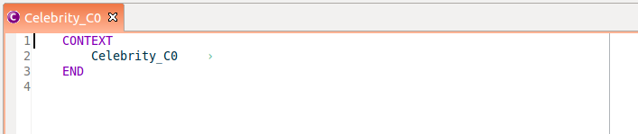

Rodin Editor User Guide
From Event-B
Contents |
Introduction
The Rodin Editor plug-in provides a structured editor to model in
Event-B withing Rodin. This editor uses a textual representation,
and edition is done through an overlay text editor and action
depending on the caret position in the text.
For more
details about the principles of this editor, see the Rodin Editor Plug-in page.
IMPORTANT FOR RODIN PLATFORMS BELOW RODIN 2.5 : we
identified a source of concurrency issue in the current version
(0.5.0) of the plug-in.
The Rodin Editor is not
maintained for these versions of Rodin since Rodin 2.4. Please
try to upgrade your plaform to the latest version of Rodin available.
To avoid any trouble, please do not generate files while
having some Rodin Editor open, and edit only one model per
project at once.
Installation
Setup
Since Rodin 2.4, the Rodin Editor is part of the core platform (i.e. it is pre-installed and available out of the box). Once you've installed Rodin 2.4 or upper, you are ready to use the Rodin Editor plug-in.
Release Notes
See Rodin Editor Release Notes
Editing
This is a small exercice to get used to the principles of the new
structured editor. It is based on the 'Celebrity' project of the
tutorial. You can download the resulting project here.
We will here build the context Celebrity_C0.
Create a context, add elements to it
Let's create a Rodin project, and add a context component called Celebrity_C0
to it.
-- By opening this context with the Rodin Editor
(right click > Open with > Rodin Editor) you shall obtain
the following:

{kind=link}
This editor allows to do things based on the position of the
caret.
-- The caret is place at the front of the context
name, and this is fine because we want to add a constant to the
context. -- To add a constant, right click and select
'[Child]-> Add Constant' as in the picture below:
{kind=link}
-- Save the file.
After saving the file, the error markers
are recalculated, and you have an error that appears on the newly
created constant 'cst1'.
You shall see something like
this :
{kind=link}
Note that you can visualize the error message by going over the error marker with the mouse.
-- Now we enter the edition mode by clicking inside the label 'cst1', as we want to name the constant 'cst1' to 'k'.
{kind=link}
The overlay editor then appears (the background is grey and a box
is drawn[see above]) and you can modify the label of the constant.
-- Modify the label to be 'k'and exit the overlay edition by
pressing 'Enter' or click next to k. Note that because
'Enter' is used to enter or exit the overlay mode under the
caret, in order to insert carriage return in text, you have to
press CTRL+ENTER (Apple+Enter) on mac platforms.
You can then save the file.
You then see something like
the following.
{kind=link}
Then we want to give this constant an integer type. As the caret
is near 'k', and k is a constant, we will use '[Sibling]-> Add
sibling' command to add an axiom.
-- Right-click and select
"[Sibling]-> Add Axiom" you see then that a new axiom was
created, named 'axm1'.
{kind=link}
You've just created an axiom that you can edit to give the
constant k a type. You can then enter the overlay edition mode to
change this value to 'k : INT'.
After saving the file,
you obtain the following context :
{kind=link}
and the markers disappear because there is no error left in your context. Finally, suppose that the axiom axm1 should be considered as a theorem, click on not theorem after the axiom formula, to change the attribute of the predicate to a theorem.
CONGRATULATIONS! You learned how to use the Rodin Editor. You learned that :
- To create an element:
- or you place the caret before the label of its parent, and create a child using '[Child]->Add xxx' where xxx is the type of element you want to add, from the contextual menu,
- or you place the caret next to a sibling element and you create a sibling using '[Sibling]->Add xxx' where xxx is the type of element you want to add, from the contextual menu.
- To edit the attributes of an element:
- you enter the overlay edition with left click or with "ENTER" and modify the textual contents,
- you press 'ENTER' to quit overlay edition (or click outside the overlay editor).
Select, Move and delete elements
-- To select elements, you can double-click on them, or press CTRL and click on one element. The selected elements appear with a blue background, or a gray background if they are of different types. See the picture below.
{kind=link}
-- To unselect element, by default, press ESC.
-- To move elements, try both:
- Move Up and Move Down commands in the context menu, once elements are selected,
- Drag and drop on the selection.
-- To delete elements, try both:
- Use the 'Delete' command on a selection from the context menu,
- Press the DEL or SUPPR key after selecting the elements you want to delete.
Using keyboard shorcuts
Here is the list of the currently key bindings which are set by default and specific to the Rodin Editor.
| KEY SEQUENCE | ACTION |
|---|---|
| BACKSPACE (ENTER) | Enter the edition mode using the overlay editor if the caret is on an editable place. |
| DEL | Suppress the element after the caret position |
| ALT+T | Add a sibling of the element pointed by the caret position. The sibling is placed just after this latter one. |
| ALT+G | Opens a popup to select the element type of the child to add to the element pointed by the caret position. Note that if there is only one child type, the child will be directly created. |
| CTRL+BACKSPACE | Insert a new carriage return while editing with the overlay editor. |
| ALT+ARROW_UP | Move up the selected elements. |
| ALT+ARROW_DOWN | Move down the selected elements. |
| SHIFT+ARROW_UP | Select elements up. |
| SHIFT+ARROW_DOWN | Select elements down. |
| ESC | Quit the current overlay edition (if any) and forget the modifications made, frees the current selection. |
| TAB | Go to the next editable place (i.e. to the next editable element attribute) |
| SHIFT+TAB | Go to the previous editable place (i.e. to the next editable element attribute) |
Customize this list
If you don't like these shortcuts, you can modify them by setting your own key preferences. To do so, go to Window > Preferences and then General > Key. A table appears were you can find and edit the shortcuts.
Tips & Tricks
A command currently disable the possibility to use the ESC instead of ALT+ESC sequence. This is quite cumbersome, and can be tuned! To do so, open the preference table for key shortcuts (described above) and after ensuring you disabled the filters of uncategorized commands (using the Filters... dialog) search for the command named "Restore Styles". This is the command to release the highlights in the proving views. You can then swith the sequence of this command to ALT+ESC and change the value of the "Abort edition and free selected items" command to ESC. After applying these settings, the shortcuts will be modified as wished above.